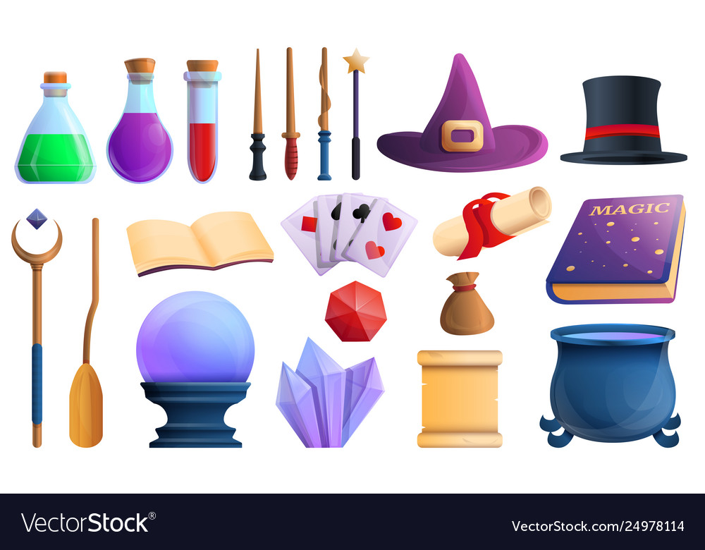

Coding rules, typically seen as instructions for maintaining neat code, carry significant importance in the creation of computer programs. Envision them as essential principles, similar to the rules and foundational elements of an engaging video game, empowering you to construct captivating universes on your computer. Furthermore, my recent exploration involves utilizing ESLint with IntelliJ for a week, and I’ve accumulated noteworthy thoughts that I’m eager to share!
Coding rules function as a recipe for crafting computer code, offering guidelines on how to structure and compose code for clarity and coherence. Consider them akin to the secret ingredient that enhances the visual appeal, functionality, and organization of your code. When adhered to by everyone involved, these rules create a common language, facilitating seamless collaboration among team members. This shared understanding simplifies group work, making it more efficient and fostering effective collaboration among individuals with diverse coding backgrounds.

The fascinating aspect is that coding rules aren’t exclusively for seasoned programmers; they also serve as invaluable guides when delving into a new computer language. Similar to a mentor imparting cool tricks, these rules illuminate the correct methodologies, offering a structured path for learners.
In my personal experience, I experimented with ESLint and IntelliJ for a week. Initially, navigating this tool was akin to learning to ride a bike with training wheels. Some adjustments were required to receive the coveted green checkmark, much like mastering the initial challenges of bike riding. Although it may seem challenging initially, this process contributes to refining coding skills in the long run.
In essence, coding rules can be likened to magic spells that enable your computer to perform extraordinary feats. ESLint and IntelliJ, in this analogy, are your reliable wizard’s tools, guiding you through the enchanting adventure of coding.